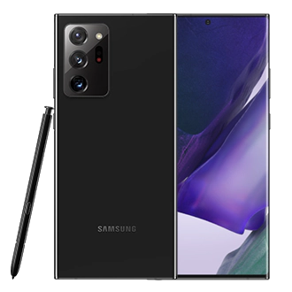

Los teléfonos móviles Samsung usan las tecnologías utilizadas por los principales operadores de telecomunicación móvil en el mundo: CDMA, GSM, GPRS y HSDPA.
| CDMA | Este tipo de tecnología es un sistema de radio digital que admite una red de telefonía móvil. CDMA da a los usuarios acceso total al espectro de la red |
| GSM | Es un tipo de red que se utiliza para la transmisión móvil de voz y datos. |
| GPRS | Es una extensión mejorada del GSM. Permite la mensajería instantánea, los servicios de mensajes cortos (SMS) y multimedia (MMS) y de correo electrónico y que estemos "siempre conectados" | HSDPA | Este tipo de conexión también se conoce como 3,5G, 3G+ o Turbo3G y puede llegar a alcanzar velocidades de 14 mbps en condiciones óptimas |
En el año 2009, la compañía logró la posición dominante
a nivel mundial como el mayor fabricante de productos
IT sobrepasando a Hewlett Packard, el líder anterior
.
Sus ingresos por ventas en las áreas de pantallas LCD y LED
así como de chips de computadora, ponen a Samsung Electronics
como la compañía número uno a nivel mundial en este segmento.
Algunos de los productos de Samsung Electronics más conocidos
son los televisores con retroiluminación sobre la base de LED
televisores LCD convencionales y la línea de productos Galaxy,
tanto smartphones como tablets. De hecho, con el modelo de teléfono
Galaxy S, la línea de teléfonos inteligentes de Samsung Electronics
ha mantenido la segunda mejor posición en el mercado mundial por algún tiempo.
La serie S de Samsung Galaxy es la serie de gama alta de Samsung GALAXY fabricado por Samsung y que vino a competir con los IPhones de Apple. La letra S se refiere al término Supersmart, la fecha de lanzamiento del primer samgung "S" fue en 4 de junio del 2010.
Evolicion de la serie "S"
Para Samsung esta serie de Galaxy "S" es la mas vendida y la que mas les ha dado, ademas de que los usuarios la piden mucho como la serie "note", si deseas conocer mas de esta serie dale click a la siguiente imagen del Note 20 ultra y si deseas adquirir algun equipo presiona volver y en la parte de arriba esta el logo de samsung, precionalo y te mandara directamente a la Samsung Store 
------------------------------------------------------------------------------------------------------------------------------------------------------------
En el hogar y antes de salir de casa
Continuamente, los estudiantes, el personal docente y administrativo, así como sus familias, deberán identificar y atender los síntomas de un posible contagio; en este contexto se recomienda que los estudiantes, personal docente y administrativo debe quedarse en casa si presenta alguno de los siguientes síntomas
Temperatura corporal mayor a 37.5°C.
De igual forma antes de salir de casa, se debe de considerar lo siguiente
Con el objeto de veriflcar que las personas que ingresen a las Instalaciones no representen un riesgo de contagio para el resto de la comunidad educa- tivía, se recomienda Implementar un control de acceso con filtros sanitartos. conforme a lo siguiente:
Establecer una o más personas encargadas del filtro sanitario en cada una de las puertas de acceso de la institución, tanto para los accesos peatonales y vehiculares.
++Las personas encargadas del filtro de Ingreso deberán:
Tomar la temperatura, aplicar alcohol en gel a1 60 - 70
%. supervisar que se cumpla con la sana distancia y que
porten equipo de protecclón personal.
++Proveer a las personas encargadas del filtro sanitario el
equipo de protecclón necesario para su uso personal:
cubrebocas, careta. guantes, alcohol en gel al 60 - 70 %.
++Proveer a las personas encargadas los Insumos
necesarios para realizar el filtro sanitario: alcohol en gel
al 60 . 70% y termometro digital
++La Institución deberá contar con estadones de limpieza
caca de los lugares asignados para el desarrollo de tas
adlvldades, los cuales deberán contar con alcohol en
gel a1 60 -70 % y desírlfectante de objetos.
En los espacios donde se lleven a cabo las actividades academicas se deberan tomar en consideracion lo siguiente:
**Al ingresar al aula los estudiantes y docentes deberán aplicarse alcohol en gel al 60 y 70%
y deberán limpiar los espacios de trabajo antes de usarlos con el material sanitizado disponible en el aula
**Todos los estudiantes y docentes deberan usar subrebocas durante la clase
Las butacas, sillas y escritorios estaran previamente marcadas para su uso
respetando la sana distancia de 1.5 metros entreo los estuientes
**Respeta la sana distancia entre los estudiantes y docentes en las aulas
**Mantener abiertas las ventanas y puertas durante las clases con el propósito de favorecer la ventilación
Las instituciones educativas deberán contar con un registro de las
personas de su comunidad educativa en situacion de vulterabiliad
que dichas personas debido a determinadas condiciones o características
de salud son más propensas a desarrollar una complicación en su salud.
Conforme al acuerdo emitido por la Secretaría de Salud en este grupo
están las mujeres embarazadas o en estado de lactancia, personas
con obesidad, personas adultas mayores de 60 años, personas con
diagnostico de himpertencion arterial, diabetes mellitus. enfermedad
cardíaca o pulmonar crónicas, inmunosupresión (adquirida o
provocada), insuficiencia renal o hepatica, infeccion por VIH
tratamiento quimioterapeutico para el cancer.
Se sugiere suspender o flexibilizar la asistencia de estudiantes o
colaboradores en situación de vulnerabilidad que.pueden desarrollar
una complicación por un posible contagio por COVID-19.
Es responsabilidad de la instituciones educativas realizar una encuesta
de saludo los estudiantes y personal que ingresará a las Instalaciones a
fin de Identificar si tienen algún síntoma relacionado con COVID.
Las Instituciones educativas deberán llevar un registro de las personas
que asisten a las actividades presenclales con el objeto de llevar un
control y poder rastrear posibles contagios y sus contactos de tal modo
que se eviten aglomeraclones.
Recomendaciones generales
++Todos los integrantes de la comunidad educativa deben ingresar a la institución con cubrebocas protegiendo su boca
++Establecer implementar mecanismos para programar y controlar la entrada y salida de la comunidad educativa evitando ingresos y egresos masivos a horas determinadas
++Solo permitir el ingreso de estudiantes para sus actividades académicas restringiendo el acceso a zonas de descanso pasillos de circulación o salas de espera
++Se sugiere que aquellas personas que se encuentran en los grupos vulnerables definidos por la secretaría de salud e identificados por la institución no asistir a las instalaciones
++Demarcar y asegurar la distancia física de 1.5 m en las filas de ingreso en todo momento
++Separar los puntos de entrada y de salida para minimizar el contacto entre las personas